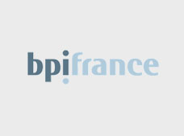
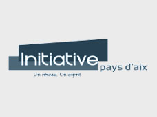

Our Partners



PROTECTONNECT is a powerful connected solution that prevents world water waste and ensures this precious resource is managed effectively by smart cities.
As our cities grow, we need to drastically increase their efficiency! Water resources are precious. Therefore, PROTECTONNECT created the first innovative, eco-friendly and public utility solution in the world.
Our solution reduces the environmental impact of waste due to water leaks and it supports users in adopting a more eco-friendly behavior.
As cities around the world experience this explosion in growth, the need to ensure that they can expand sustainably and operate efficiently has become one of the biggest challenges humanity has to face.
Thanks to the deployment of the PROTECTONNECT application and the development of our analysis algorithms, water data can be used to provide new services that are essential to a resilient, sustainable and humane smart city.
The PROTECTONNECT insulation cover fits all types and brands of water meters in the world, including the 500 million homes in Europe and the United States.
Easy installation "in 30 seconds" with a 12-year warranty.
The PROTECTONNECT application allows you to control and monitor your consumption in real time and over a given period of time.
From his dashboard, the user will have access to the display of expenses related to his water consumption. The user will be able to set consumption targets and will be alerted if they are exceeded.
PROTECTONNECT helps to limit financial and material loss by saving time in leak detection thanks to the application's alerts.
In addition, practical advice will be given through the application to encourage users to, for instance, choose more financially and environmentally friendly equipment.
The protection against water meter freezing will help you avoid the unexpected cost of a water meter replacement (a charge of 80€ to 130€ in case of damage due to frost).
Our solution allows permanent monitoring of water installations in a main or holiday house, a collective residential building, and an industrial facility, by offering fast management intervention 24/7.
PROTECTONNECT is an ergonomically shaped and specific cover for the meter, the front and the back of meters, made of robust technical textile materials, sealing optimization and multi-thermal insulators, for use in temperatures up to -24° (initial patent).
Thanks to a connected technology, embedded, and at the forefront of electronics, the PROTECTONNECT cover, fitted with various sensors, is remotely controlled via a mobile application, allowing real-time detection of leaks and global monitoring consumption for smart cities.
The customer is warned remotely by a "Water Leak Alert" via SMS or email. Once the customer receives the alert, he can either manage the leakage himself, or ask the PROTECTONNECT team to do it for him due to lack of knowledge, in the event of vacations or prolonged absence from the place of residence (holiday homes).
We provide technical support within 24 hours by putting the customer in touch with a network of selected professional partners (local plumbers, geolocation leakage companies, water services of the municipalities).